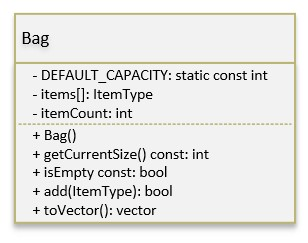

📖 Overview
A template class is one that is based on the idea of code reuse where you can have an algorithmic solution to a problem and you can generalize it across different data types.
To address this, I want to look at the concept of a BAG. A bag is a construct that we can put things into. We can also:
- get how many things are stored in it
- check if it is empty
- get a list of everything in the bag
We are going to create what is called a "template" class that allows us to use the bag to put things into. So we can have a bag of Strings or a bag of People, or a bag of Groceries, etc...
The one thing, is that our bag can only store items of the same type and instead of writing separate classes, one to have a bag of strings and another to have a bag of people, we will write 1 class that can be used to store whatever we want.
📐 UML Diagram
A UML diagram of our basic bag class:
🎬 Video
The following video reviews, discusses and walks through how to create and use/test the concept of a Bag construct.
📁 Files from the Video
💡 Quick Guide: Templates in C++
What: Templates let you write generic classes or functions parameterized by type so the same code works for different types (for example, Bag<int> or Bag<std::string>). How: the compiler generates concrete code when you instantiate a template (instantiation happens during compilation).
template<class ItemType>
class Bag {
public:
void add(const ItemType &i) { items.push_back(i); }
bool isEmpty() const { return items.empty(); }
private:
std::vector items;
};
// usage:
Bag<int> bi;
bi.add(1);
Bag<std::string> bs;
bs.add("apple");
Quick notes / pitfalls:
- Put template definitions in headers so the compiler can instantiate them.
- Templates assume the operations you use on the type exist (e.g.,
operator==for acontains()method). - Many instantiations can increase binary size; use templates judiciously.
Try this
- Create
Bag<int>andBag<std::string>, add elements, and iterate them. - Add a
contains()method (usesoperator==) and test with a smallstruct Person. - Practice RAII: use
std::unique_ptror smart containers to manage dynamic memory safely.
Resources: cppreference: Templates • ISOC++ FAQ
🔑 Key Concepts
The key to creating a template class is to include the following definition just before declaration of our class in our .h header file and before each method definition in our .cpp implementation file.
template<class ItemType>
Note: ItemType is just a placeholder variable for whatever you plan to store in the bag (you can name it differently if you prefer).